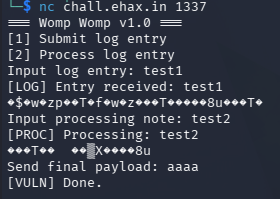

EHAX CTF 2026 - Womp Womp (PWN)
Challenge Overview
- Challenge Name: Womp Womp
- Category: Binary Exploitation (PWN)
- Difficulty: Medium
- Description: Hippity hoppity the flag is not your property
- Flag format:
EHAX{...} - Provided Files / URL:
challengelibcoreio.so- Remote service:
nc chall.ehax.in 1337
Goal
Exploit the remote service and obtain the flag in the format EHAX{...}.
Initial Analysis
I first tested both the remote service and the local binary to understand the interaction flow. The program asks for three inputs:
Input log entry:Input processing note:Send final payload:

After the first two inputs, the program printed binary-looking garbage bytes after echoing my input. That told me it might be an out-of-bounds read / stack leak.
Reconnaissance commands
file challenge libcoreio.so
checksec --file=challenge
ldd ./challenge
nm -D ./challenge
nm -D ./libcoreio.so

Key findings
-
challengeis a 64-bit PIE executable - Protections enabled: Full RELRO, Canary, NX, PIE
-
challengeimportsemit_reportfromlibcoreio.so - Because canary + PIE are enabled, a working exploit likely requires:
- an information leak (canary + PIE base)
- a controlled overflow
- a ROP chain
Solution Path
1) Use the flag routine in libcoreio.so
Disassembling emit_report revealed the condition to getting the flag. The function checks three 64-bit arguments and only proceeds if they match “magic” constants.
Required arguments:
ARG1 = 0xdeadbeefdeadbeef
ARG2 = 0xcafebabecafebabe
ARG3 = 0xd00df00dd00df00d

If the values are correct, emit_report opens and prints the flag file.
This means the final exploit goal is to call:
emit_report(ARG1, ARG2, ARG3);
2) Analyze the vulnerable functions in challenge
I disassembled submit_note, review_note, and finalize_entry.
submit_note() - stack leak
Basically it:
- reads
0x40bytes into a stack buffer atrbp-0x50 - writes back
0x58bytes from that same buffer
This leaks beyond the user-controlled data into adjacent stack memory (including stack metadata).

review_note() - PIE leak + canary leak
This one:
- reads
0x20bytes into a stack buffer atrbp-0x30 - stores a function pointer (
finalize_note) at[rbp-0x10] - writes
0x30bytes from the buffer region
Which then leaks:
- user-controlled
B...bytes - the stored function pointer (
finalize_note) -> PIE leak - the stack canary -> canary leak

finalize_entry() - stack overflow
Last but not least, it:
- stack frame size:
0x50 - reads
0x190bytes intorbp-0x48
This overflows the canary, saved RBP, and saved RIP.
Payload layout from the read() destination (rbp-0x48):
offset 0x00: filler (0x40 bytes)
offset 0x40: stack canary (8 bytes)
offset 0x48: saved RBP (8 bytes)
offset 0x50: saved RIP (ROP chain begins here)

3) Gadget constraints and ret2csu strategy
I found these useful gadgets in challenge:
pop rdi ; retpop rsi ; pop r15 ; ret- no direct
pop rdx ; ret
Since emit_report() requires rdi, rsi, and rdx, the missing pop rdx ; ret makes a standard direct ROP call not doable.
The workaround is to use the __libc_csu_init gadgets (ret2csu) to set rdx via r13.

Also, the csu call gadget sets edi with r15d (32-bit), so it can’t directly set rdi = 0xdeadbeefdeadbeef (full 64-bit). This means we need to:
- use ret2csu only to set
rdx = ARG3 - then use normal gadgets to set:
rdi = ARG1rsi = ARG2
- call
emit_report@plt
4) Preserving rdx with .init_array / frame_dummy
The ret2csu sequence needs a function call (call [r12 + rbx*8]). I used .init_array as the function pointer table and called the first entry (frame_dummy) by setting:
rbx = 0r12 = pie_base + INIT_ARRAY_OFF
This call path keeps the rdx value set via r13, which makes it possible for the chain to continue with rdx = ARG3 still there.
5) Building the final ROP chain
Final chain structure inside the finalize_entry() overflow:
- Overflow to RIP while restoring the correct canary
- ret2csu setup + csu call to set
rdx = ARG3 - padding
-
pop rdi ; ret->ARG1 -
pop rsi ; pop r15 ; ret->ARG2 -
retfor correct alignment emit_report@plt
Commands, Scripts, and Code Snippets
Useful analysis commands
objdump -d -Mintel ./challenge | sed -n '/<submit_note>:/,/^$/p'
objdump -d -Mintel ./challenge | sed -n '/<review_note>:/,/^$/p'
objdump -d -Mintel ./challenge | sed -n '/<finalize_entry>:/,/^$/p'
objdump -d -Mintel ./libcoreio.so | sed -n '/<emit_report>:/,/^$/p'
ROPgadget --binary ./challenge | grep -E 'pop rdi ; ret|pop rsi ; pop r15 ; ret|ret$'
Dead Ends / Mistakes (What I Learned)
I initially tried a more complicated two-stage exploit:
- leak
emit_reportruntime address from the GOT - pivot the stack
- jump into
emit_reportafter the argument checks
Although this was probably possible, it didn’t work well. I’m guessing because it was fragile and just unnecessary. The cleaner solution was:
- use ret2csu only for
rdx - use standard gadgets for
rdiandrsi - call
emit_report@pltdirectly
Flag Capture

Conclusion
The workflow of this challenge need to overcome several security aspects:
- leak stack data to recover canary and PIE base
- exploit a stack overflow while preserving the canary
- build a ROP chain under gadget constraints
- use ret2csu as a practical workaround for missing register-control gadgets (
rdx)
Main takeaway: when a direct pop rdx ; ret gadget is missing, __libc_csu_init can often be helpful. It is also very helpful to make a python script to automate the whole exploit, instead of having to retype and retry things in the shell.